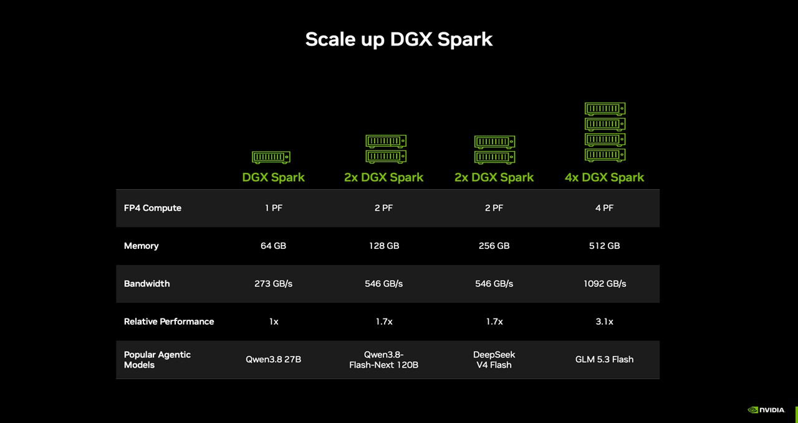

一、导语：个人 AI 超算，价格先降了下来
10 月 2 日，英伟达在官方博客宣布，DGX Spark 增加一档 64GB 统一内存的新配置，10 月 23 日（周五）起由宏碁、华硕、戴尔、技嘉、惠普、微星六家整机伙伴开卖，起步价 4,999 美元。官方给出的定位很直接：单机就能在端侧跑通最高 1000 亿参数的模型，以及建立在这些模型之上的智能体应用，全程不依赖云端。对一台同时挂着“个人”和“AI 超算”两个标签的设备来说，这个价格和这个参数上限，才是它真正想说的话。
二、背景分析：算力正在从云里走回桌面
过去两年，AI 的算力几乎都堆在数据中心——训练在云上，推理也在云上。但今年风向明显在变：一方面，Qwen、DeepSeek、GLM 这些开源权重模型越做越强、越做越小，能在消费级硬件上跑出可用的效果；另一方面，隐私、延迟和长期成本，让越来越多的开发者和企业开始重新考虑“把模型放在自己机器上”。英伟达自己已经把 “Local AI” 喊了一整年，这次的 64GB 版本，就是它给本地推理准备的一个更低门槛的硬件入口。
值得说明的是，64GB 版并不是缩水的入门货。4,999 美元的机器，和更贵的 128GB 型号共用同一颗 GB10 Grace Blackwell 超级芯片、同一套 DGX OS 和完整的英伟达 AI 软件栈——区别只在内存的多少。英伟达显然想让“桌面级本地 AI”从发烧友玩具，变成开发者随手就能开工的工具。
三、核心内容：一台机器，和它能连成的集群
硬件层面，DGX Spark 把 Grace Blackwell 计算、统一内存、ConnectX-7 网络和 CUDA 加速的 AI 栈塞进一个巴掌大的方盒子里。出厂即带 DGX OS、NVIDIA Agent Toolkit、CUDA-X 库和 Nemotron 开源模型，Ollama、vLLM、llama.cpp、LM Studio、PyTorch（CUDA 版）开箱可用。官方说法是“开机到跑起模型只要几分钟”。
性能数据这次给得比较全：单台 64GB 版提供 1 PF 的 FP4 算力、273 GB/s 内存带宽，可跑最高 1000 亿参数模型；两台用 QSFP 线通过 ConnectX-7 直连，内存合并为 128GB、带宽翻倍到 546 GB/s，模型上限升到 2000 亿参数，英伟达在 Qwen 3.8 27B 测试里给出的相对性能是最高 1.7 倍；堆到四台，则是 512GB 内存、4 PF 算力、1092 GB/s 带宽、约 3.1 倍性能。官方适配清单里点名的模型包括 Qwen3.8 27B、Qwen3.8-Flash-Next 120B、DeepSeek V4 Flash 和 GLM 5.3 Flash。

真正降低了使用门槛的，是配套软件。每台机器都内置 ConnectX-7 网卡，两台直连后 NVIDIA Sync 应用会自动识别设备、校验配置并配置网络；英伟达称同一套工作流从单机扩到双机“无需重新配置软件环境”。月底还将上线 NVIDIA Sync Model Launcher，把本地跑模型简化成点几下按钮——开发者可以在单机或集群上一键拉起 Qwen3.8 27B，并在浏览器里直接用 OpenCode 写代码。
四、各方反应：整机厂与创作软件先上车
六家整机伙伴几乎同步官宣，意味着这不是英伟达自家的限量货，而是一条正在铺开的产品线。软件侧，Blender 成为首批支持该平台的大型创作应用之一，预编译安装包即将放出——对一个本地 AI 盒子来说，能不能被内容创作工作流接受，往往比跑分更能说明问题。
从社区反馈看，讨论集中在两点：一是“1000 亿参数”在 64GB 内存下是否留有余量给长上下文和多智能体并发；二是两台直连合并内存的方案，实际体验是否真能做到官方承诺的“零重配”。英伟达给的三个典型场景——7×24 常驻编码/研究智能体、给普通 PC 当本地推理后端、任务变大时再加一台——基本覆盖了个人开发者最现实的用法。
「本地 AI 正在变得一次比一次更有用。随着智能体从实验走进日常开发，能力越来越强的开源模型正在缩小体积，好让开发者在本地跑更多东西。」
五、深度解读：当“不联网”也成了一种产品能力
第一层，是成本结构的变化。对需要长期、高频调用模型的开发者来说，云端按 token 计费的模式会随时间线性累积，而一台 4,999 美元的桌面设备把大部分边际成本一次性锁死。英伟达没有公开对比云成本的数字，但“7×24 常驻智能体”这个场景本身，就只有在本地跑才划算。
第二层，是数据主权。DGX Spark 反复强调“privately, without cloud dependency（私密、不依赖云）”。对医疗、法律、金融这类被合规约束的团队，能在一台不上网的机器上跑 1000 亿参数的模型，价值不在快，而在“数据不出门”。这一点，是任何 API 都替代不了的。
第三层，是生态卡位。英伟达把 CUDA-X、Nemotron、Agent Toolkit、Sync 全家桶一起塞进这个盒子，等于在“本地推理”这个新战场上，提前把开发者的工具链焊死在自己的栈上。当本地 AI 真的起量，谁定义了从模型到运行时的默认选择，谁就拿到了下一阶段的入口。
六、总结
一句话：DGX Spark 64GB 用 4,999 美元和 1000 亿参数这两个数字，把“个人 AI 超算”从口号变成了一个可以下单的选项；而它真正押注的，是 AI 算力从云端回流桌面这条更长的曲线。